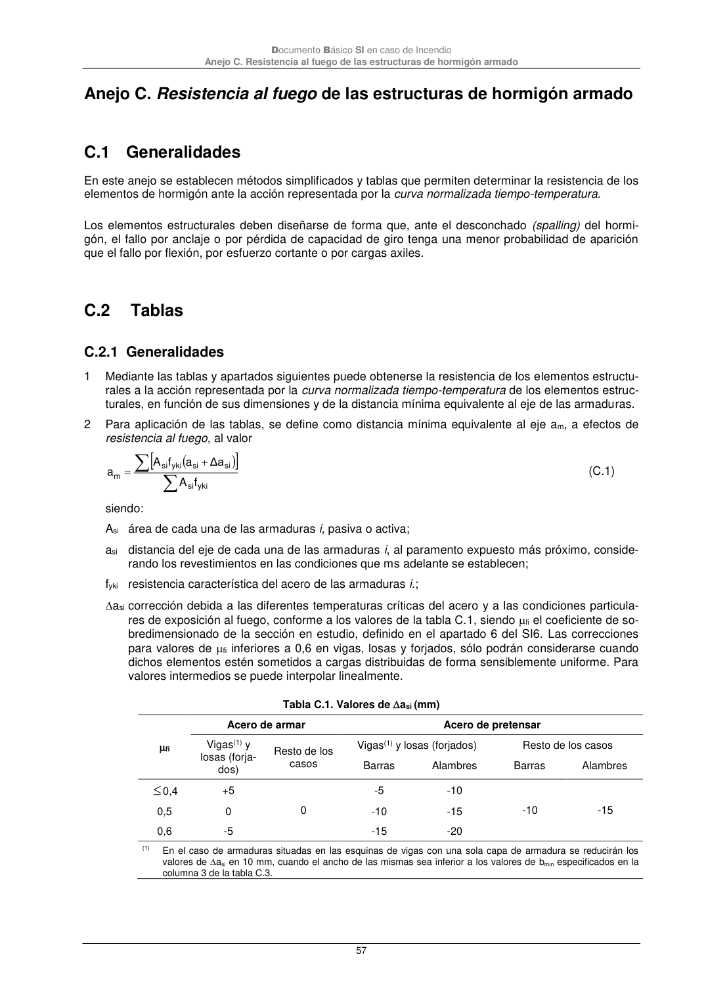

DB-SI · C.2.1 Generalidades · versión 2025-03-04 · capa oficial
Formatos: JSON compacto · Markdown · PDF fuente
Ámbito del documento · texto del ámbito · documento y tablas
ID técnico a0153 · PDF pág. 57 · jerarquía no validada por persona · contrastado con el literal de la página 57 (marcador PDF); no validado por persona · padre: raíz
Documento Básico SI en caso de Incendio

PDF fuente redistribuible: copia fiel enlazada en esta página (SHA256 verificado).